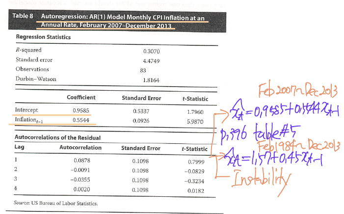
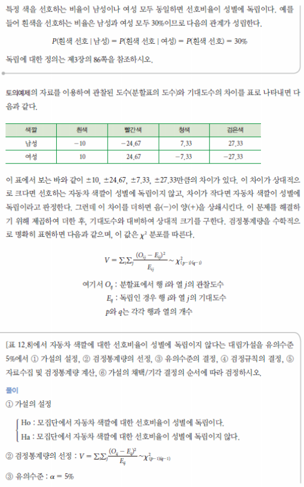

CFA Level 2 Quantitative Methods
Introduction to Linear Regression

LOS 4.a: Distinguish between the dependent and independent variables in a linear regression.
LOS 4.b: Explain the assumption underlying linear regression and interpret regression coefficients.
LOS 4.c: Calculate and interpret the standard error of estimate, the coefficient of determination, and a confidence interval for a regression coefficient.
LOS 4.d: Formulate a null and alternative hypothesis about a population value of a regression coefficient and determine the appropriate test statistic and whether the null hypothesis is rejected at a given level of significance.
LOS 4.e: Calculate the predicted value for the dependent variable, given an estimated regression model and a value for the independent variable.
LOS 4.f: Calculate and interpret a confidence interval for the predicted value of the dependent variable.
LOS 4.g: Describe the use of analysis of variance (ANOVA) in regression analysis, interpret ANOVA results, and calculate and interpret the F-statistic.
LOS 4.h: Describe limitations of regression analysis.
2.1 Linear regression with one independent variable
\[ \\ Y_{i} = b_{0} + b_{1}X_{i} + \epsilon_{i}, i = 1, ..., n \\ Y = \text{dependent variable} \\ X = \text{independent variable} \\ \epsilon = \text{error term} \\ b_{0} = \text{intercept} \\ b_{1} = \text{slope coefficients} \]
We refer to \(b_{0}, b_{1}\) as the regression coefficients. \[ \\ \text{minimize} = \sum^{n}_{i = 1}{(Y_{i} - \hat{b_{0}} - \hat{b_{1}}X_{i})^{2}} \]
\[ \\ \text{long-term inflation} = -0.0008 + 0.3339 (\text{long-term money supply growth}) \\ \text{slope coefficient} = \frac{Cov(Y, X)}{Var(X)} \approx \beta = \frac{Cov(R_{m}, R_{i})}{Var(R_{m})} \]
3. Assumptions of the linear regression model
4. The standard error of estimate
\[ \\ \text{SEE (Standard Error of Estimate)} = (\frac{\sum^{n}_{i = 1}{(Y_{i} - \hat{b_{0}} - \hat{b_{1}}X_{i})^{2}}}{n-2})^{1/2} = (\frac{\sum^{n}_{i = 1}{(\hat{\epsilon_{i}}})^{2}}{n-2})^{1/2} \]
5. The coefficient of determination
\[ \\ R^{2} = \frac{\text{Explained variation}}{\text{Total variation}} = \frac{\text{Total variation} - \text{Unexplained variation}}{\text{Total variation}} \]
6. Hypothesis testing
Suppose we regress a stock’s returns on a stock market index’s returns and find that the slope coefficient \((b_{1})\) is 1.5 with a standard error \((s_{\hat{b_{1}}})\) of 0.200. Assume we used 62 monthly observations in our regression analysis. The hypothesized value of the parameter \((\hat{b_{1}})\) is 1.0, the market average slope efficient. The estimated and the population slope coefficients are often called beta, because the population coefficient is often represented by the Greek symbol beta \((\beta)\) rather than the \(b_{1}\) we use in this reading. Our null hypothesis is that \(b_{1} = 1.0\) and \(\hat{b_{1}}\) is the estimate for \(b_{1}\). We will use a 95 percent confidence interval for our test, or we could say that the test has a significance level of 0.05.
Our Confidence interval will span the range \(\hat{b_{1}} - t_{c}s_{\hat{b_{1}}}\, to\, \hat{b_{1}} + t_{c}s_{\hat{b_{1}}}\).
To test the hypothesis, we can compute the statistic \[ \\ t = \frac{\hat{b_{1} - b_{1}}}{s_{\hat{b_{1}}}} \]
7. Analysis of variance in a regression with one independence variable
Analysis of variance (ANOVA)
8. Prediction intervals
9. Limitations of regression analysis
Fist, regression relations can change over time, parameter instability.
A second limitation is public knowledge of regression relationships may negate their future usefulness.
Finally, if the regression assumptions are violated, hypothesis tests and predictions based on linear regression will not be vaild.
Multiple regression
LOS 5.a: Formulate a multiple regression equation to describe the relation between a dependent variable and several independent variables and determine the statistical significance of each independent variable.
LOS 5.b: Interpret estimated regression coefficients and their p-values.
LOS 5.c: Formulate a multiple regression equation to describe the relation between a dependent variable and several independent variables and determine the statistical significance of each independent variable.
LOS 5.d: Interpret the results of hypothesis tests of regression coefficients.
LOS 5.e: Calculate and interpret 1) a confidence interval for the population value of a regression coefficient and 2) a predicted value for the dependent variable, given an estimated regression model and assumed values for the independent variables.
LOS 5.f: Explain the assumptions of a multiple regression model.
LOS 5.g: Calculate and interpret the F-statistic, and describe how it is used in regression analysis.
LOS 5.h: Distinguish between and interpret the \(R^{2}\) and adjusted \(R^{2}\) in multiple regression.
LOS 5.i: Evaluate how well a regression model explains the dependent variable by analyzing the output of the regression equation and an ANOVA table.
LOS 5.j: Formulate a multiple regression equation by using dummy variables to represent qualitative factors and interpret the coefficients and regression results.
LOS 5.k: Explain the types of heteroskedasticity and how heteroskedasticity and serial correlation affect statistical inference.
LOS 5.l: Describe multicollinearity and explain its causes and effects in regression analysis.
LOS 5.m: Describe how model misspecification affects the results of a regression analysis and describe how to avoid common forms of misspecification.
LOS 5.n: Describe models with qualitative dependent variables.
LOS 5.o: Evaluate and interpret a multiple regression model and its results.
2. Multiple linear regression
Multiple linear regression model \[ \\ Y_{i} = b_{0} + b_{1}X_{1i} + b_{2}X_{2i} + ... + b{k}X_{ki} + \epsilon_{i}, i = 1, 2, ..., n \\ b_{1}, ..., b_{k} = \text{regression coefficient} \]
\[ \\ t = \frac{\hat{b_{j}} - b_{j}}{s_{\hat{b_{j}}}} \]
partial regression coefficient or partial slope coefficient - a slope coefficient holing the other independent variable constant
2.1 Assumptions of the multiple linear regression model
- The relationship between the dependent variable, Y, and the independent variables, \(X_{1}, X_{2}, ..., X_{k}\), is linear.
- The independent variables (\(X_{1}, X_{2}, ..., X_{k})\) are not random. Also, no exact linear relationship exists between two or more of the independent variables.
- The expected value of the error term, conditioned on the independent variables, is \(E(\epsilon | X_{1}, X_{2}, ..., X_{k}) = 0\).
- The variance of the error term is the same for all observations, \(E(\epsilon_{i}^{2} = \sigma_{\epsilon}^{2})\).
- The error term is uncorrelated across observations: \(E(\epsilon_{i}\epsilon_{j}) = 0, i \neq j\).
- The error term is normally distributed.
If the independent variable is random, then is the regression model incorrect? Fortunately, no. Even if the independent variable is random but uncorrelated with the error term, we can still rely on the results of regression models.
2.2 Predicting the dependent variable in a multiple regression model
2.3 Testing whether all population regression coefficient equal zero
What if we now want to test the significance of the regression as a whole? As a group, do the independent variables help explain the dependent variable? \[
\\
F = \frac{RSS / k}{SSE / [n - (k + 1)]} = \frac{\text{mean regression of squares}}{\text{mean squared error}} = \frac{\text{MSR}}{\text{MSE}}
\] 
2.4 Adjusted \(R^{2}\)
\[ \\ \bar{R^{2}} = 1 - \frac{n-1}{n - k - 1}(1 - R^{2}) \]
3. Using dummy variables in regressions
4. Violations of regression assumptions
4.1 Heteroskedasticity
the variance of the errors differs across observations.
4.1.1 The consequences of heteroskedasticity
Although heteroskedasticity does not affect the consistency of the regression parameter estimators, it can lead to mistakes in inference. When errors are heteroskedastic, the F-test for the overall significance of the regression is unreliable. Furthermore, t-tests for the significance of individual regression coefficients are unreliable. If a regression show significant heteroskedasticity, the standard errors and test statistics computed by regression programs will be incorrect.
Unconditional heteroskedasticity occurs when heteroskedasticity of the error variance is not correlated with the independent in the multiple regression. - x에 pattern 없음
Conditional heteroskedasticity-heteroskedasticity in the error variance that is correlated with (conditional on) the value of the independent variables in the regression. - x에 pattern 있음
4.1.2 Testing for heteroskedasticity
Breusch and Pagan suggested the following test for conditional heteroskedasticity.
Breusch-Pagan test
4.1.3 Correcting for heteroskedasticity
The first method, computing robust standard errors, corrects the standard errors of the linear regression model’s estimated coefficients to account for the conditional heteroskedasticity. The second method, generalized least squares, modifies the original equation in an attempt to eliminate the heteroskedasticity.
4.2 Serial correlation
4.2.1 The consequences of serial correlation
As with heteroskedasticity, the principal problem caused by serial correlation in a linear regression is an incorrect estimate of the regression coefficient standard errors computed by statistical software package. Then the estimated parameters themselves will be consistent.
Positive serial correlation is serial correlation in which a positive error for one observation increases the change of a positive error for another observation.
In contrast, with negative serial correlation, a positive error for one observation increases the change of a negative error for another observation, and a negative error for one observation increases the chance of a positive error for another.
first-order serial correlation - 1기간 serial correlation
4.2.2 Testing for serial correlation
Durbin-Watson statistic \[ \\ DW = \frac{\sum^{T}_{t=2}{(\hat{\epsilon_{t}} - \hat{\epsilon_{t - 1}})^{2}}}{\sum^{T}_{t = 1}{\hat{\epsilon_{t}^{2}}}} \] Therefore, we can test the null hypothesis that the errors are not serially correlated by testing whether the Durbin-Watson statistic differs significantly from 2.
If the sample is very large, the Durbin-Watson statistic will be approximately equal to 2(1 - r), where r is the sample correlation between the regression residuals from one period and those from the previous period.
- If the regression has no serial correlation, then the regression residuals will be uncorrelated through time and the value of the Durbin-Watson statistic will be equal to 2(1 - 0) = 2.
- If the regression residuals are positively serially correlated, then the Durbin-Watson statistic will be less than 2.
4.2.3 Correcting for serial correlation
First, we can adjust the coefficient standard errors for the linear regression parameter estimates to account for the serial correlation. Second, we can modify the regression equation itself to eliminate the serial correlation. We recommend using the first method for dealing with serial correlation.
Two of the most prevalent methods for adjusting standard errors were developed by Hansen and Newey and West. These methods are standard features in many statistical software package. An additional advantage of these methods is that they simultaneously correct for conditional heteroskedasticity.
4.3 Multicollinearity
The second assumption of the multiple linear regression model is that no exact linear relationship exists between two or more of the independent variables.
Multicollinearity occurs when two or more independent variables (or combinations of independent variables) are highly (but not perfectly) correlated with each other.
4.3.1 The consequences of multicollinearity
Although the presence of multicollinearity does not affect the consistency of the OLS estimates of the regression coefficients, the estimates become extremely imprecise and unreliable. Furthermore, it becomes practically impossible to distinguish the individual impacts of the independent variables on the dependent variable.
4.3.2 Detecting multicollinearity
In contrast to the cases of heteroskedasticity and serial correlation, we shall not provide a formal statistical test for multicollinearity. In practice, multicollinearity is often a matter of degree rather than of absence of presence.
The analyst should be aware that using the magnitude of pairwise correlations among the independent variables to assess multicollinearity.
The classic symptom of multicollinearity is a high \(R^{2}\) (and significant F-statistic) even though the t-statistics on the estimated slope coefficients are not significant.
4.3.3 Correcting for multicollinearity
The most direct solution to multicollinearity is excluding one or more of the regression variables.
4.4 Heteroskedasticity, serial correlation, multicollinearity: summarizing the issues
5. Model specification and errors in specification
Model specification refers to the set of variables included in the regression and the regression equation’s functional form.
5.2 Misspecified functional form
- One or more important variables could be omitted from regression.
- One or more of the regression variables may need to be transformed (For example, by taking the natural logarithm of the variable) before estimating the regression.
- The regression model pools data from different samples that should not be pooled.
If the true regression model was
6. Models with qualitative dependent variables
Unfortunately, the predicted value of the probability could be much greater than 1 or much lower than 0 depending on the estimated coefficients \(b_{i}\), and the value observed \(X_{i}^{`}\)s. Of course, these results would be invalid. The probability of bankruptcy (or of anything, for that matter) cannot be greater than 1.0 or less than 0.0.
probit regression (probit model), logistic regression (logit model) \[ \\ \ln{\frac{p}{1 - p}} = b_{0} + b_{1}X_{1} + b_{2}X_{2} + b_{3}X_{3} + \epsilon \\ \hat{p} = \frac{exp[\hat{b_{0}} + \hat{b_{1}}X_{1} + \hat{b_{2}}X_{2} + \hat{b_{3}}X_{3}]}{1 + exp[\hat{b_{0}} + \hat{b_{1}}X_{1} + \hat{b_{2}}X_{2}]} \]
Time-Series Analysis
1. Introduction to time-series analysis
3. Trend models
3.1 Linear trend models
\[ \\ y_{t} = b_{0} + b_{1}t + \epsilon_{t}, t = 1, 2, ..., T \]
3.2 Log-linear trend models
Therefore, exponential growth is growth at a constant rate. continuous compounding is a mathematical convenience that allows us to restate the equation in a form that is easy to estimate.
A linear trend regression for quarterly sales at Starbucks
A log-linear regression for quarterly sales at Starbucks
4. Autoregressive (AR) time-series models
\[ \\ AR(1): x_{t} = b_{0} + b_{1}x_{t - 1} + \epsilon_{t} \]
4.1 Covariance-stationary series
First, the expected value of the time series must be constant and finite in all periods: \(E(y_{t}) = \mu\) and \(|\mu| < \infin, t = 1, 2, ..., T\). Second, the variance of the time series must be constant and finite in all periods. Third, the covariance of the time series with itself for a fixed number of periods in the past or future must be constant and finite in all periods. the second and third requirements can be summarized as follows.
4.3 Mean reversion
We say that a time series shows mean reversion if it tends to fall when its level is above its mean and rise when its level is below its mean.
If a time series is currently at its mean-reverting level, then the model predicts that the value of the time series will be the same in the next period. At its mean-reverting level, we have the relationship \(x_{t + 1} = x_{t}\). For an AR(1) model, \(x_{t + 1} = b_{0} + b_{1}x_{t}\), the equality \(x_{t + 1} = x_{t}\) implies the level \(x_{t} = b_{0} + b_{1}x_{t}\) or that the mean-reverting level, is given by \[ \\ x_{i} = \frac{b_{0}}{1 - b_{1}} \] As we will discuss later, all covariance-stationary time series have a finite mean-reverting level.
4.5 Comparing forecast model performance

In-sample forecast errors / out-of-sample forecast errors
4.6 Instability of regression coefficients


5. Random walks and unit roots
\[ \\ x_{t} = x_{t - 1} + \epsilon_{t}, E(\epsilon_{t}^{2}) = \sigma^{2}, Cov(\epsilon_{t}, \epsilon_{s}) = E(\epsilon_{t}\epsilon_{s}) = 0\, \text{if}\, t \neq s \] First, this equation is a special case of an AR(1) model with \(b_{0} = 0\) and \(b_{1} = 1\). Second the expected value of \(\epsilon_{t}\) is zero. Therefore, the best forecast of \(x_{t}\) that can be made in period t - 1 is \(x_{t - 1}\).
Unfortunately, we cannot use the regression methods we have discussed so far to estimate an AR(1) model on a time series that is actually a random walk. Recall that if \(x_{t}\) is at its mean-reverting level, then \(x_{t} = b_{0}\, and\, b_{1} = 1\), so \(b_{0} / (1 - b_{1}) = 0 / 0\)
What is the variance of a random walk?
What is the practical implication of these issues? We cannot use standard regression analysis on a time series that is a random walk.
first-differencing - equal to the difference between \(x_{t}\) and \(x_{t - 1}\)
The first-differenced variable, \(y_{t}\), is covariance stationary. How is this so? First, note that this model (\(y_{t} = \epsilon_{t}\)) is an AR(1) model with \(b_{0} = 0\) and \(b_{1} = 0\).
5.2 The unit root test of nonstaionary
6. Moving-average time-series models
n-period moving average \[ \\ \frac{x_{t} + x_{t - 1} + ... + x_{t - (n - 1)}}{n} \]
6.2 Moving-average time-series models for forecasting
\[ \\ x_{t} = \epsilon_{t} + \theta\epsilon_{t - 1}, E(\epsilon_{t}) = 0, E(\epsilon_{t}^{2}) = \sigma^{2} \\ Cov(\epsilon_{t}, \epsilon_{s}) = E(\epsilon_{t}\epsilon_{s}) = 0\, for\, t \neq s \]
7. seasonality in time-series models
\[ \\ x_{t} = b_{0} + b_{1}x_{t - 1} + b_{2}x_{t - 4} + \epsilon_{t} \]


8. Autoregressive moving-average models
9. Autoregressive conditional heteroskedasticity models
ARCH(1) \[ \\ \epsilon \sim N(0, a_{0} + a_{1}\epsilon_{t - 1}^{2}) \] If a time-series model has ARCH(1) errors, then the variance of the errors in period t + 1 can be predicted in period t using the formula \(\hat{\sigma_{t + 1}^{2}} = \hat{a_{0}} + \hat{a_{1}}\hat{\epsilon_{t}^{2}}\).
Suppose a model contains ARCH(1) errors. What are the consequences of that fact? First, if ARCH exists, the standard errors for the regression parameters will not be correct. We will need to use generalized least squares. Second, if ARCH exists and we have it modeled, for example as ARCH(1), we can predict the variance of the errors.
Engle and other researchers have suggested many generalizations of the ARCH(1) model, including ARCH(p) and generalized autoregressive conditional heteroskedasticity (GARCH) models. \[ \\ \sigma_{t}^{2} = a_{0} + a_{1}\epsilon_{t - 1}^{2} + ... + a_{p}\epsilon_{t - p}^{2} \]
10. Regressions with more than one time series
One possible scenario is that we find that neither of the time series has a unit root. Then we can safely use linear regression to test the relations between the two time series.
A second possible scenario is that we reject the hypothesis of a unit root for the independent variable but fail to reject the hypothesis of a unit root the dependent variable.
A third possible scenario is the reverse of the second scenario: We reject the hypothesis of a unit root for the dependent variable but fail to reject the hypothesis of a unit root for the independent variable.
The next possibility is that both time series have a unit root. In this case, we need to establish whether the two time series are cointegrated before we can rely on regression analysis.
LOS 6.a: Calculate and evaluate the predicted trend value for a time series, modeled as either a linear trend or log-linear trend, given the estimated trend coefficients.
LOS 6.b: Describe, factors that determine whether a linear or a log-linear trend should be used with a particular time series and evaluate limitations of trend models.
LOS 6.c: Explain the requirement for a time series to be covariance stationary and describe the significance of a series that is not stationary.
LOS 6.d: Describe the structure of an autoregressive (AR) model of order p and calculate one- and two-period-ahead forecasts given the estimated coefficients.
LOS 6.e: Explain how autocorrelations of the residuals can be used to test whether the autoregressive model fits the time series.
LOS 6.f: Explain mean reversion and calculate a mean-reverting level.
LOS 6.g: Contrast in-sample and out-of-sample forecasts and compare the forecasting accuracy of different time-series models based on the root mean squared error criterion.
LOS 6.h: Explain the instability of coefficients of time-series models.
LOS 6.i: Describe characteristics of random walk processes and contrast them to covariance stationary processes.
LOS 6.j: Describe implications of unit roots for time-series analysis, explain when unit roots are likely to occur and how to test for them, and demonstrate how a time series with a unit root can be transformed so it can be analyzed with a AR model.
LOS 6.k: Describe the steps of the unit root test for nonstationarity and explain the relation of the test to autoregressive timeseries models.
LOS 6.l: Explain how to test and correct for seasonality in time-series model and calculate and interpret a forecasted value using an AR model with a seasonal lag.
LOS 6.m: Explain autoregressive conditional heteroskedasticity (ARCH) and describe how ARCH models can be applied to predict the variance of a time series.
LOS 6.n: Explain how time-series variable should be analyzed for nonstationarity and/or cointegration before use in a linear regression.
LOS 6.o Determine an appropriate time-series model to analyze a given investment problem and justify that choice.
Machine learning
LOS 7.a: Distinguish between supervised machine learning, unsupervised machine learning, and deep learning.
LOS 7.b: Describe overfitting and identify methods of addressing it.
LOS 7.c: Describe supervised machine learning algorithms-including penalized regression, support vector machine, k-nearest neighbor, classification and regression tree, ensemble learning, and random forest-and determine the problems for which they are best suited.
LOS 7.d: Describe unsupervised machine learning algorithms-including principal components analysis, k-means clustering, and hierarchical clustering-and determine the problems for which they are best suited.
LOS 7.e: Describe neural networks, deep learning nets, and reinforcement learning.
3. What is machine learning?
3.2 Supervised learning
Supervised learning involves ML algorithms that infer patterns between a set of inputs (the X’s) and the desired output (Y). Supervised learning requires a labeled data set.
The dependent variable (Y) is the target, and the independent variables (X’s) are known as features.
3.3 Unsupervised learning
Unsupervised learning is machine learning that does not make use of labeled data.
Dimension reduction focuses on reducing the number of features while retaining variation across observations to preserve the information contained in that variation.
Clustering focuses on sorting observations into groups (clusters) such that observations in the same cluster are more similar to each other than they are to observations in other clusters.
3.5 Summary of ML algorithms and how to choose among them
4.1 Generalization and overfitting
training sample / validation sample / test sample
Complexity refers to the number of features, terms, or branches in the model and to whether the model is linear or non-linear (non-linear is more complex).
4.2 Errors and overfitting
- Bias error, or the degree to which a model fits the training data.
- Variance error, or how much the model’s results change in response to new data from validation and test sample.
- Base error due to randomness in the data
4.3 Preventing overfitting in supervised machine learning
- preventing the algorithm from getting too complex during selection and training, which requires estimating an overfitting penalty
- proper data sampling achieved by using cross-validation, a technique for estimating out-of-sample error directly by determining the error in validation samples
holdout samples - data samples not used to train the model
k-fold cross-validation - in which data (Excluding test sample and fresh data) are shuffled randomly and then are divided into k equal sub-samples, with k - 1 samples used as training samples and one samples the kth, used as a validation sample.
5. Supervised machine learning algorithms
5.1 Penalized regression
preventing overfitting
- penalty
- cross-validation
to minimize the sum of the squared residuals <- original goal \[ \\ \sum^{n}_{t = 1}{(Y_{i} - \hat{Y_{i}})^{2}} \]
LASSO (Least Absolute Shrinkage and Selection Operator)
\[ \\ \text{Penalty term} = \lambda\sum^{K}_{k = 1}{|\hat{b_{k}}|} \\ \sum^{n}_{t = 1}{(Y_{i} - \hat{Y_{i}})^{2}} + \lambda\sum^{K}_{k = 1}{|\hat{b_{k}}|} \]
minimize LASSO
lambda is a hyperparameter - 사전에 결정하는 변수
Regularization describes methods that reduce statistical variability in high dimensional data estimation problems-in this case, reducing regression coefficient estimates toward zero and thereby avoiding complex models and the risk of overfitting.
5.2 Support vector machine
Linear classifier
5.3 K-nearest neighbor
KNN. The idea is to classify a new observation by finding similarities (nearness) between new observation and the existing data.
5.4 Classification and regression tree
CART
To avoid such overfitting, regularization parameters can be added, such as the maximum depth of the tree, the minimum population at a node, or the maximum number of decision nodes. Alternatively, regularization can occur via a pruning (가지치기) technique that can be used afterward to reduce the size of the tree.
5.5 Ensemble learning and random forest
5.5.1 Voting classifier
A majority-vote classifier
If the SVM and KNN models are both predicting the category “stock outperformance” and the CART model is predicting the category “stock underperformance”. -> 여러 model 결과에서 많이 나온 결과 채택
5.5.2 Bootstrap aggregating (bagging)
Alternatively, one can use the same machine learning algorithm but with different training data. Bootstrap aggregating (or bagging) is a technique whereby the original training data set is used to generate n new training data sets or bags of data.
5.5.3 Random forest
6. Unsupervised machine learning algorithms
6.1 Principal components analysis
6.2 Clustering
A cluster contains a subset of observations from the data set such that all the observations within the same cluster are deemed “similar”.
6.2.2 K-means clustering
The number of cluster, k, is a model hyperparameter-a parameter whose value must be set by the researcher before learning begins. Each cluster is characterized by its centroid, and each observation is assigned by the algorithm to the cluster with the centroid to which that observation is closet.
- K-means starts by determining the position of the k initial random centroid.
- The algorithm then analyzes the features for each observation. Based on the distance measure that is utilized, k-means assigns each observation to its closet centroid, which defines a cluster.
- Using the observations within each cluster, k-means then calculates the new (k) centroid for each cluster, where the centroid is the average value of their assigned observations.
- K-means then reassigns the observations to the new centroids, redefining the clusters in terms of included and excluded observations.
- The process of recalculating the new (k) centroids for each cluster is reiterated.
- K-means then reassigns the observations to the revised centroids, again redefining the clusters in terms of observations that are included and excluded.
6.2.2 Hierarchical clustering: agglomerative and divisive
Agglomerative clustering hierarchical clustering begins with each observation being treated as its own cluster.
Divisive clustering (or top-down) hierarchical clustering starts with all the observations belonging to a single cluster.
6.2.3 Dendrograms
A type of tree diagram for visualizing a hierarchical cluster analysis known as a dendrogram highlights the hierarchical relationships among the clusters.
7. neural networks, deep learning nets, and reinforcement learning
7.1 Neural networks
nodes - circles
links - arrows connecting nodes
These nodes are sometimes called “neurons” because they process information received. Once the node receives the four input values, the summation operator multiples each value by a weight and sums the weighted values to form the total net input. The total net input is then passed to the activation function, which transforms this input into the final output of the node.
forward propagation
If the process of adjustment works backward through the layers of the network, this process is called backward propagation.
New weight = Old weight - Learning rate * partial derivative of the total error with respect to the old weight
7.2 Deep learning nets
Neural networks with many hidden layers-at least 3 but often more than 20 hidden layers-are known as deep learning nets (DLNs).
Big data projects
LOS 8.a: State and explain steps in a data analysis project.
LOS 8.b: Describe objectives, steps, and examples of preparing and wrangling data.
LOS 8.c: Describe objectives, methods, and examples of data exploration.
LOS 8.d: Describe objectives, steps, and techniques in model training.
LOS 8.e: Describe preparing, wrangling, and exploring test-based data for financial forecasting.
LOS 8.f: Describe methods for extracting, selecting and engineering features from textual data.
LOS 8.g: Evaluate the fit of a machine learning algorithm.
3. Steps in executing a data analysis project: financial forecasting with big data
Traditional ML model building steps
- Conceptualization of the modeling task - This crucial fist step entails determining what the output of the model should be, how this model will be used and by whom, and how it will be embedded in existing or new business processes.
- Data collection
- Data preparation and wrangling
- Data exploration
- Model training
The text ML model building steps used for the unstructured data sources of big data.
- Text problem formulation - Identifying the exact inputs and outputs for the model. Analysts must also decide how the text ML model’s classification output will be utilized.
- Data (text) curation
- Text preparation and wrangling
- Text exploration
Account for the characteristics of big data: volume, velocity, variety, and veracity
4. Data preparation and wrangling
Data preparation (cleansing)
Data wrangling (preprocessing)
4.1 Structured data
Data preparation (cleansing)
- Imcompleteness error is where the data are not present, resulting in missing data
- Invalidity error is where the data are outside of a meaningful range, resulting in invalid data.
- Inaccuracy error is where the data are not a measure of true value.
- Inconsistency error is where the data conflict with the corresponding data points or reality.
- Non-uniformity error is where the data are not present in an identical format.
- Duplication error is where duplicate observations are present.
Data wrangling (preprocessing)
- Extraction - A new variable can be extracted from the current variable for ease of analyzing and using for training the ML model.
- Aggregation - Two or more variables can be aggregated into one variable to consolidate similar variables.
- Filtration - The data rows that are not needed for the project must be identified and filtered.
- Selection - The data columns that are intuitively not needed for the project can be removed.
- Conversion - The variables can be of different types: nominal, ordinal, continuous, and categorical. The variables in the dataset must be converted into appropriate types to further process and analyze them correctly. Before converting, values must be stripped out with prefixes and suffixes, such as currency symbols.
Any outliers that are present must first be identified.
In practice, several techniques can be used to detect outliers in the data. Standard deviation can be used to identify outliers in normally distributed data. In general, a data value that is outside of 3 standard deviations from the mean may be considered an outlier. The interquartile range(IQR) can be used to identify outliers in data with any form of distribution.
There are several practical methods for handling outliers. Outliers are simply removed from the dataset, it is known as trimming (also called truncation). When extreme values and outliers are replaced with the maximum (for large value outliers) and minimum (for small value outliers) values of data points that are not outliers, the process is known as winsorization.
Scaling a process of adjusting the range of a feature by shifting and changing the scale of data. Variables can have a diversity of ranges that result in a heterogeneous training dataset.
- Normalization is the process of rescaling numeric variables in the range of [0, 1].
- Standardization is the process of both centering and scaling the variables.
Normalization is sensitive to outliers, so treatment of outliers is necessary before normalization is performed. Normalization can be used when the distribution of the data is not known. Standardization is relatively less sensitive to outliers as it depends on the mean and standard deviation of the data. However, the data must be normally distributed to use standardization.
4.2 Unstructured (text) data
Text preparation (cleansing)
A regular expression (regex) is used to for patterns of interest in a given text.
- Remove html tags
- Remove punctuations
- Remove numbers
- Remove white spaces

Test wrangling (preprocessing)
Token is equivalent to a word, and tokenization is the process of splitting a given text into separate tokens.
Similar to structured data, text data also require normalization.
Lowercasing
Stop words - 검색시 검색용어로 사용하지 않는 언어
Stemming is the process of converting inflected forms of a word into its base word (known as stem). - 어간 추출
Lemmatization - 표제어 추출
image-20211103190933331
After the cleansed text is normalized, a bag-of-words is created. Bag-of-words (BOW) representation is a basic procedure used to analyze text.
DTM (document term matrix)

N-grams is representation of word sequences.

5. Data exploration objectives and methods
5.1 Structured data
For one-dimensional data
- histogram
- bar charts
- box plots
- density plots
For data with two or more dimensions -> \(R^{2}\) increases
5.2 Unstructured data: Text Exploration
The most common applications are text classification, topic modeling, fraud detection, and sentiment analysis.
Term frequency (TF), the ratio of the number of times a given token occurs in all the texts in the dataset to the total number of tokens in the dataset.
Text statistics can be visually comprehended by using the same methods as explained in the structured data section.
Feature selection
독립변수 고르기
noisy features are tokens that do not contribute to ML model training and actually might detract from the ML model accuracy.
매우 빈도가 높거나 낮은 단어들, sparse words, stop words
The general feature selection methods in text data are as follows:
- Frequency measures can be used for vocabulary pruning to remove noise features by filtering the tokens with very high and low TF values across all the texts. Document frequency (DF)
- Chi-square test can be useful for feature selection in text data.

- Mutual information (MI) measures how much information is contributed by a token to a class of texts. The mutual information value will be equal to 0 if the token’s distribution in all text classes is the same.
Feature engineering
- Numbers - In text processing, numbers are converted into a token.
- N-grams - Multi-word patterns that are particularly discriminative can be identified and their connection kept intact.
- Name entity recognition (NER) - The name entity recognition algorithm analyzes the individual tokens and their surrounding semantics while referring to its dictionary to tag an object class to the token.
- Parts of speech (POS) - Similar to NER, parts of speech uses languages structure and dictionaries to tag every token in the text with a corresponding part of speech. POS tags can be useful for separating verbs and nouns for text analytics.
6. Model training
6.1 Structured and unstructured data
Model selection
- Supervised or unsupervised learning - For supervised learning typical methods of choice are regression, ensemble trees, support vector machines and neural networks. Supervised learning would be used, for example, for default prediction based on high-yield corporate bond issuer data. For Unsupervised learning, common methods are dimensionality reduction, clustering, and anomaly detection. Unsupervised learning, for example, would be used for clustering financial institutions into different groups based on their financial attributes.
- Type of data - For numerical data classification and regression tree (CART) methods may be suitable. For text data, such methods as generalized linear models (GLMs) and SVMs are commonly used. For image data, NNs and deep learning methods tend to perform better than others. For speech data, deep learning methods can offer promising results.
- Size of data - A typical dataset has two basic characteristics: number of instances and number of features. SVMs have been found to work well on ‘wider’ datasets with 10000 to 100000 features and with fewer instances. Conversely, NNs often work better on ‘longer’ datasets, where the number of instances is much larger than the number of features.
Once a method is selected, certain method-related decisions need to be made. These decisions include the number of hidden layers in a neural network and the number of trees in ensemble methods (discussed later in the sub-section on tuning).
Before model training begins, in the case of supervised learning the master dataset is split into three subsets used for model training and testing purposes. The first subset, a training set used to train the model, should constitute approximately 60% of the master dataset. The second subset, a cross-validation set (or validation set) used to tune and validate the model, should constitute approximately 20% of the master dataset. The third subset is a test set for testing the model and uses the remaining data. A commonly recommended split ratio is 60:20:20.
Class imbalance,where the number of instances for a particular class is significantly larger than for other classes, may be a problem for data used in supervised learning because the ML classification method’s objective is to training a high-accuracy model.
Performance evaluation
Error analysis - confusion matrix

image-20211103193148867
\[ \\ \text{precision P} = TP / (TP + FP) \\ \text{recall R} = TP / (TP + FN) \\ \text{accuracy} = (TP + TN) / (TP + FP + TN + FN) \\ \text{F1 score} = (2 * P * R) / (P + R) \]
- Receiver operating characteristics (ROC)
\[ \\ \text{False positive rate FFR} = FP / (FP + TN) \\ \text{True positive rate TPR} = TP / (TP + FN) \]
Area under the curve (AUC) is the metric that measures the area under the ROC curve.
- Root mean squared error (RMSE)
\[ \\ RMSE = \sqrt{\sum^{n}_{t = 1}{\frac{(\text{Predicted}_{i} - \text{Actual}_{i})^{2}}{n}}} \]
Tuning
- Parameters
- Hyperparameters
TF (Term Frequency) at sentence level
\[ \\ TF = \text{Word count in sentence} / \text{Total words in sentence} \]
DF (Document Frequency)
\[ \\ DF = \text{Sentence Count with word} / \text{Total number of sentences} \]
IDF (Inverse Document Frequency)
\[ \\ IDF = log(1 / DF) \]
Excerpt from “Probabilistic Approaches: Scenario Analysis, Decision Trees, and Simulations”
LOS 9.a: Describe steps in running a simulation.
LOS 9.b: Explain three ways to define the probability distributions for a simulation’s variables.
LOS 9.c: Describe how to treat correlation across variables in a simulations.
LOS 9.d: Describe advantages of using simulations in decision making.
LOS 9.e: Describe some common constraints introduced into simulations.
LOS 9.f: Describe issues in using simulations in risk assessment.
LOS 9.g: Compare scenario analysis, decision trees, and simulations.
If scenario analysis and decision trees
2.1 Steps in simulation
- Determine “probabilistic” variables
- Define probabilistic distributions for these variables
- historical data
- cross sectional data
- statistical distribution and parameters
- Check for correlation across variables
- Run the simulation
2.5 Issues
- Garbage in, garbage out
- Real data may not fit distributions
- Non-stationary distribution
- Changing correlation across inputs
3. An overall assessment of probabilistic risk assessment approaches
3.1 Comparing the approaches
- Selective versus full risk analysis - In the best-case/worst-case scenario analysis, we look at only three scenarios (the best case, the most likely case, and the worst case) and ignore all other scenarios. Even when we consider multiple scenarios, we will not have a complete assessment of all possible outcomes from risk investments or assets.
- Type of risk
- Correlation across risks - If the various risks that an investment is exposed to are correlated, simulations allow for explicitly modeling these correlations (assuming that you can estimate and forecast them).
3.2 Complement of replacement for risk-adjusted value
Both decision trees and simulations are approaches that can be used as either complements to or substitutes for risk-adjusted value. Scenario analysis, on the other hand, will always be a complement to risk-adjusted value, since it does not look at the full spectrum of possible outcomes.